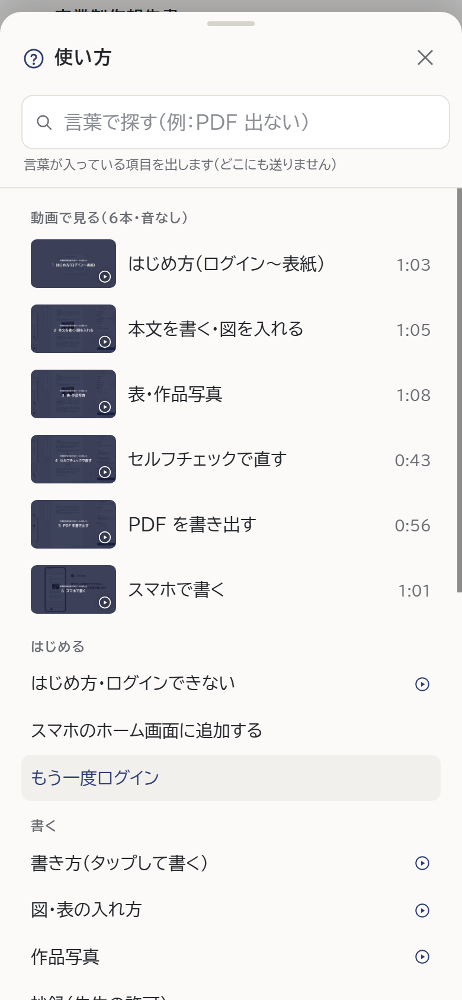

どの案も、上の「言葉で探す」と、項目を押したあとの中身は今のままです。学生用（スマホ・パソコン）と先生用の使い方の両方に使います。
小さな灰色の見出しの下に、題が文字だけで並んでいます。押せる所とまとまりの区切りが分かりにくく、動画の絵も暗くて読めません。

並びは今のまま、まとまりごとに白いカードにし、絵と色の見出しを付けます。項目には「›」を付けて押せると分かるように。動画は横に並べ、明るい絵に大きく番号を出します。
動画で見る（6本・音なし・各1分ほど）
はじめに、よくある困りごとと、6つのまとまりの大きなボタンだけを出します（ほぼ1画面に収まります）。ボタンを押すと、そのまとまりの項目が出ます（1回多く押す）。
よくある困りごと
ボタンを押すと、そのまとまりの項目が並びます。
書く順に ①はじめる ②書く ③確かめる ④PDF と番号で並べ、動画はその段の横に置きます。保存・端末・ログインのトラブルは、下の「困ったとき」にまとめます。
C の「困ったとき」には、ほかに「2つのタブ」「別の端末で書いた原稿」「共用のパソコン」「最初から作り直す」「画面の案内をもう一度見る」が続きます（見本は上の部分だけ）。先生用の使い方も、同じ形（先生の仕事の順＋困ったとき）にそろえます。